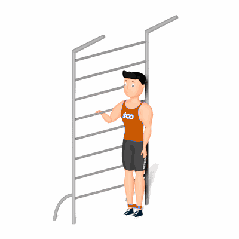

Abdutor Unilateral com Faixa Elástica

O exercício trabalha o fortalecimento dos músculos do glúteo, com ênfase nos músculos Glúteo Médio e Mínimo.
Ficha Técnica
Tipo: Funcional
Grupo Muscular: Glúteo
Aparelho: Nenhum
Músculos: Nenhum
Como realizar
- Fique em pé com as pernas em paralelo e coloque a mini band entre as pernas na altura da canela;
- Manter o joelho direito estendido, eleve a perna para a lateral de seu corpo o mais alto que conseguir, mantendo o troco imóvel;
- Retorne à posição inicial de forma controlada com a perna estendida;
- Repita os movimentos, conforme o número de repetições orientado pelo o professor;
- Ao termino das repetições, realize os movimentos com o membro contralateral, perna esquerda.
 RC STORE
RC STORE